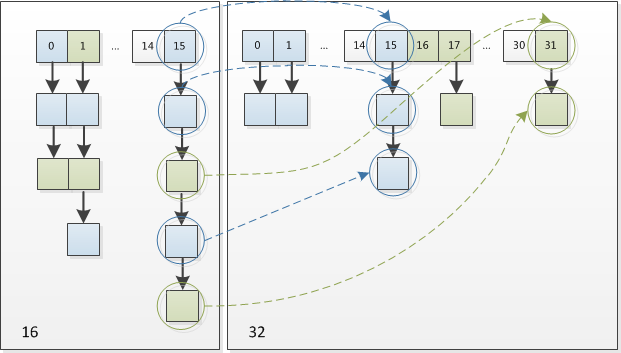

HashMap
在get和put的过程中，计算下标时，先对hashCode进行hash操作，然后再通过hash值进一步计算下标，如下图所示：

在对hashCode()计算hash时具体实现是这样的：
static final int hash(Object key) {
int h;
return (key == null) ? 0 : (h = key.hashCode()) ^ (h >>> 16);
}
可以看到这个函数大概的作用就是：高16bit不变，低16bit和高16bit做了一个异或。
在设计hash函数时，因为目前的table长度n为2的幂，而计算下标的时候，是这样实现的(使用&位操作，而非%求余)。设计者认为这方法很容易发生碰撞。为什么这么说呢？不妨思考一下，在n - 1为15(0x1111)时，其实散列真正生效的只是低4bit的有效位，当然容易碰撞了。
因此，设计者想了一个顾全大局的方法(综合考虑了速度、作用、质量)，就是把高16bit和低16bit异或了一下。设计者还解释到因为现在大多数的 hashCode 的分布已经很不错了，就算是发生了碰撞也用O(logn)的tree去做了。仅仅异或一下，既减少了系统的开销，也不会造成的因为高位没有参与下标的计算(table长度比较小时)，从而引起的碰撞。
如果还是产生了频繁的碰撞，会发生什么问题呢？作者注释说，他们使用树来处理频繁的碰撞(we use trees to handle large sets of collisions in bins)，在JEP-180中，描述了这个问题：
Improve the performance of java.util.HashMap under high hash-collision conditions by using balanced trees rather than linked lists to store map entries. Implement the same improvement in the LinkedHashMap class.
之前已经提过，在获取HashMap的元素时，基本分两步：
- 首先根据
hashCode()做 hash ，然后确定 bucket 的 index ； - 如果 bucket 的节点的 key 不是我们需要的，则通过
keys.equals()在链中找。
在Java 8之前的实现中是用链表解决冲突的，在产生碰撞的情况下，进行 get 时，两步的时间复杂度是 O(1)+O(n)O(1)+O(n) 。因此，当碰撞很厉害的时候n很大， O(n)O(n) 的速度显然是影响速度的。因此在Java 8中，如果一个 bucket 中碰撞冲突的元素超过某个限制(默认是8)，则使用红黑树来替换链表，这样复杂度就变成了 O(1)+O(logn)O(1)+O(log**n) 了，这样在 n 很大的时候，能够比较理想的解决这个问题。
hashMap 的 hash():
在hashMap 中，key在数组中的位置计算：需要根据key的 hash值 对其数组长度进行取模得到。
需要注意：元素的 hash 值，不是简单的使用key的 hashCode()。
JDK8 中：
将key的hashCode的二进制表示： 高16位 与 低16位进行异或运算 的得到hash值。
JDK 8 以前：

Resize
当put时，如果发现目前的bucket占用程度已经超过了Load Factor所希望的比例，那么就会发生resize。在resize的过程，简单的说就是把bucket扩充为2倍，之后重新计算index，把节点再放到新的bucket中。resize的注释是这样描述的：
Initializes or doubles table size. If null, allocates in accord with initial capacity target held in field threshold. Otherwise, because we are using power-of-two expansion, the elements from each bin must either stay at same index, or move with a power of two offset in the new table.
大致意思就是说，当超过限制的时候会resize，然而又因为我们使用的是2次幂的扩展(指长度扩为原来2倍)，所以，元素的位置要么是在原位置，要么是在原位置再移动2次幂的位置。例如我们从16扩展为32时，具体的变化如下所示：
因此元素在重新计算 hash 之后，因为n变为2倍，那么 n-1 的 mask 范围在高位多1bit(红色)，因此新的index就会发生这样的变化：
因此，我们在扩充HashMap的时候，不需要重新计算hash，只需要看看原来的hash值新增的那个bit是1还是0就好了，是0的话索引没变，是1的话索引变成“原索引+oldCap”。可以看看下图为16扩充为32的resize示意图：

这个设计确实非常的巧妙，既省去了重新计算hash值的时间，而且同时，由于新增的1bit是0还是1可以认为是随机的，因此resize的过程，均匀的把之前的冲突的节点分散到新的bucket了。
并发问题
在 HashMap 并发进行 Resize 的过程中会出现环形链表，导致 get() 操作死循环。